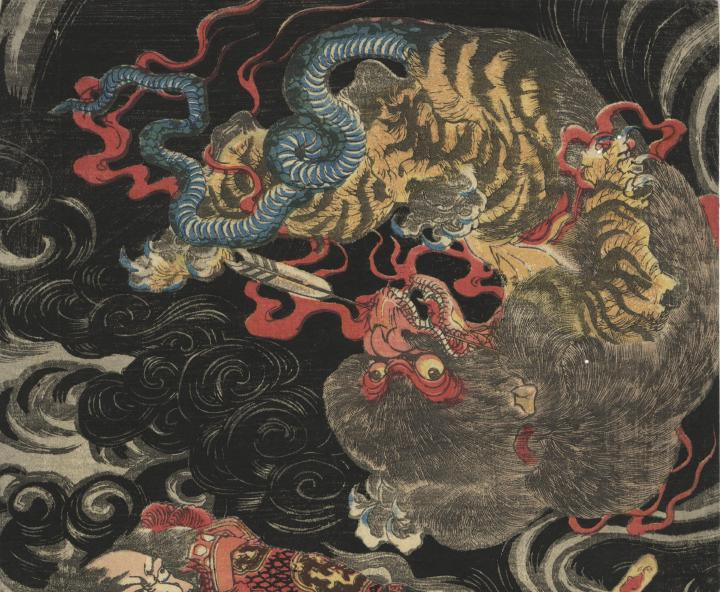

鵺に源三位頼政の放った矢が刺さっている。
著作者：一勇齋國芳／出典：親書誌：U426_nichibunken_0340：源三位頼政鵺退治；ゲンサンミ ヨリマサ ヌエ タイジ／日付：2014／資源識別子：U426_nichibunken_0340_0001_0000
Copyright (c)2010- International Research Center for Japanese Studies, Kyoto, Japan. All rights reserved.